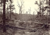
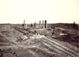
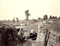
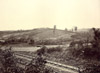

Report of Col. Thomas E. Rose
September 14, 1864



Atlanta, from
The Landscapes of the Civil War

The Atlanta Railroad, from
The Landscapes of the Civil War

Camp at Atlanta, from
Landscapes of the Civil War

Atlanta, from
The Landscapes of the Civil War


Physical Description from Sgt. John
Obreiter's History of the Regiment